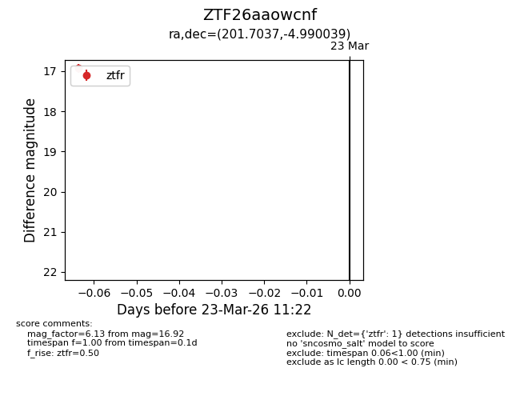
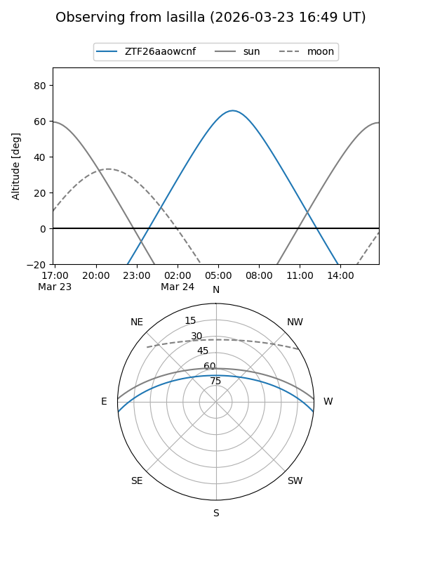
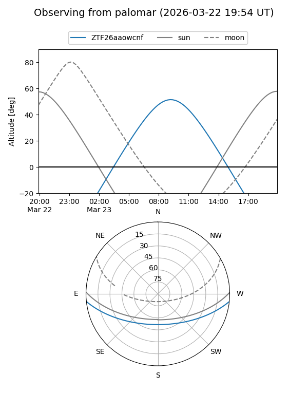

ZTF26aaowcnf
Target ZTF26aaowcnf at 2026-03-23 11:24
Aliases and brokers:
FINK: link
Lasair: link
ALeRCE: link
alt names
ZTF26aaowcnf (ztf,fink_ztf)
Coordinates:
equatorial (ra, dec) = 201.7037,-4.99004
equatorial (HMS+DMS) = 13:26:48.89,-04:59:24.14
galactic (l, b) = (319.1591,+56.76299)
Flags:
Photometry:
last ztfr=16.92
1 ztfr detections
Lightcurve

Visibility


Additional plots